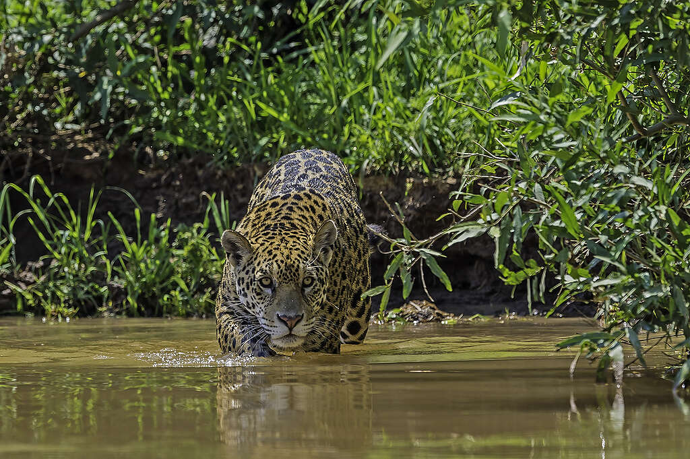
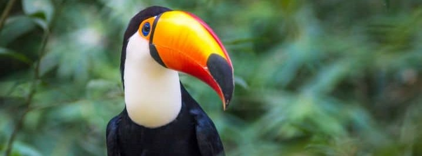
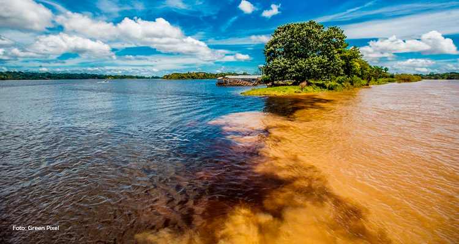
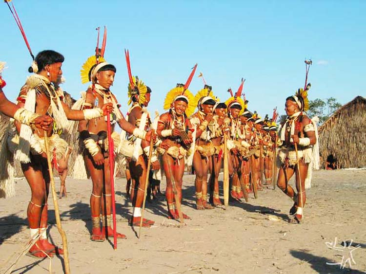
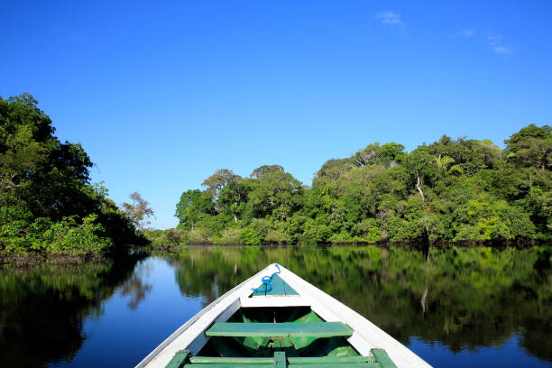

The Amazon and Resilient Communities
The North region, with its rich culture and unmatched biodiversity, reveals a powerful face of LGBTQIA+ resistance and expression. In cities like Belém and Manaus, the queer scene is growing with cultural parties, social movements, and local artists who give voice to Amazonian diversity. On river cruises or immersive visits to riverside communities, travelers find warm and genuine hospitality. The Amazon is also a place of deep discoveries, where respect for diversity intertwines with connection to the land and traditions.
LGBTQIA+ tourism in the North is marked by authenticity and meaningful encounters. Whether joining community-based ecotourism experiences or exploring indigenous-led initiatives, queer travelers are welcomed into a space where cultural roots and inclusive values coexist. The region invites visitors to reflect, connect, and celebrate identity in one of the most awe-inspiring environments on Earth.